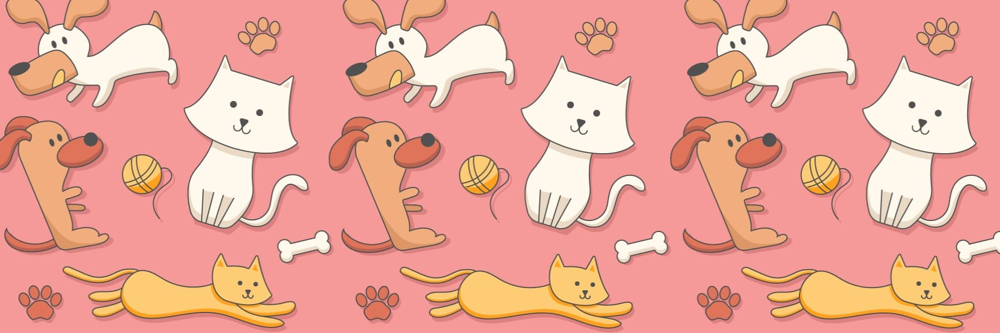
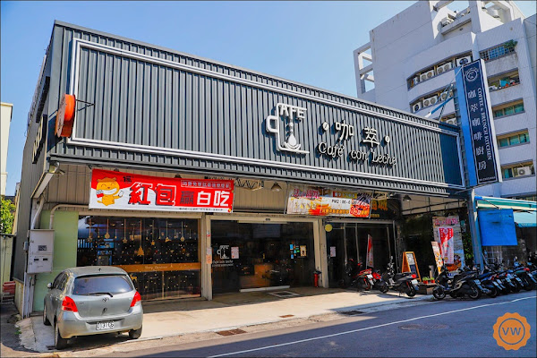
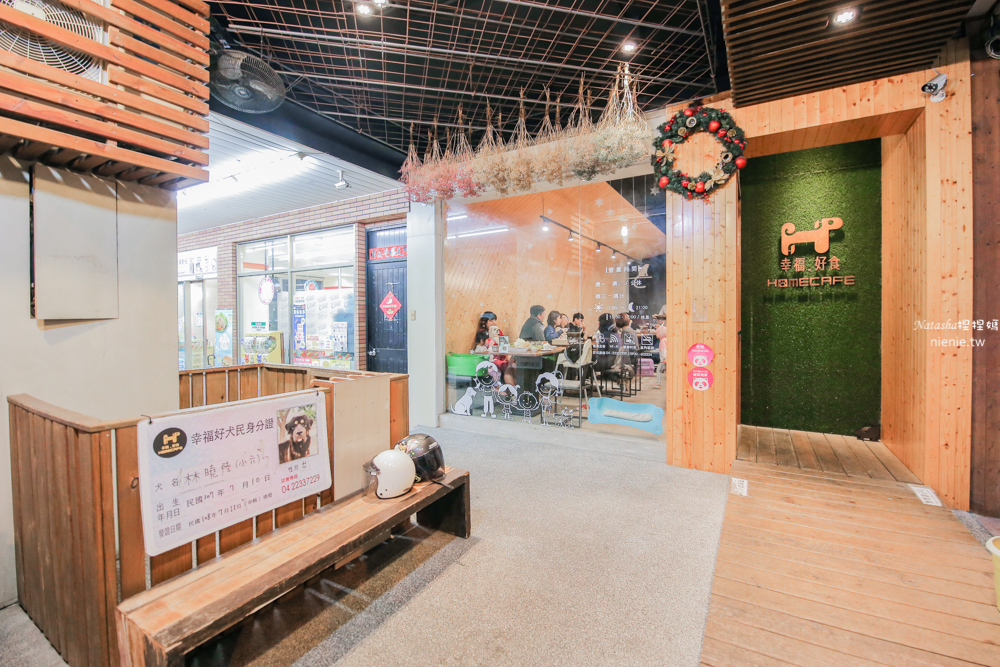
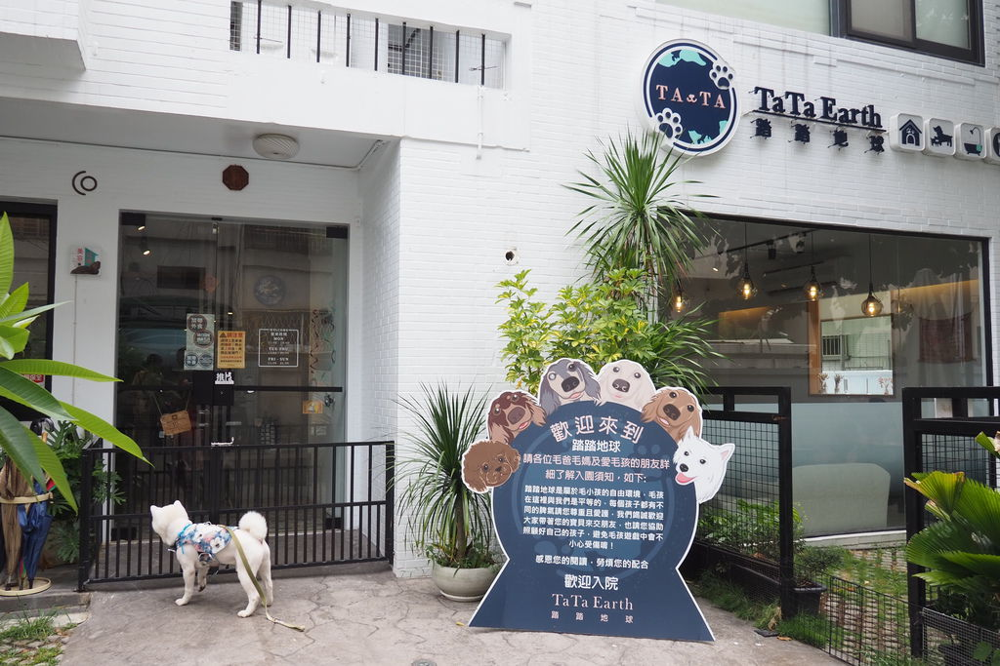
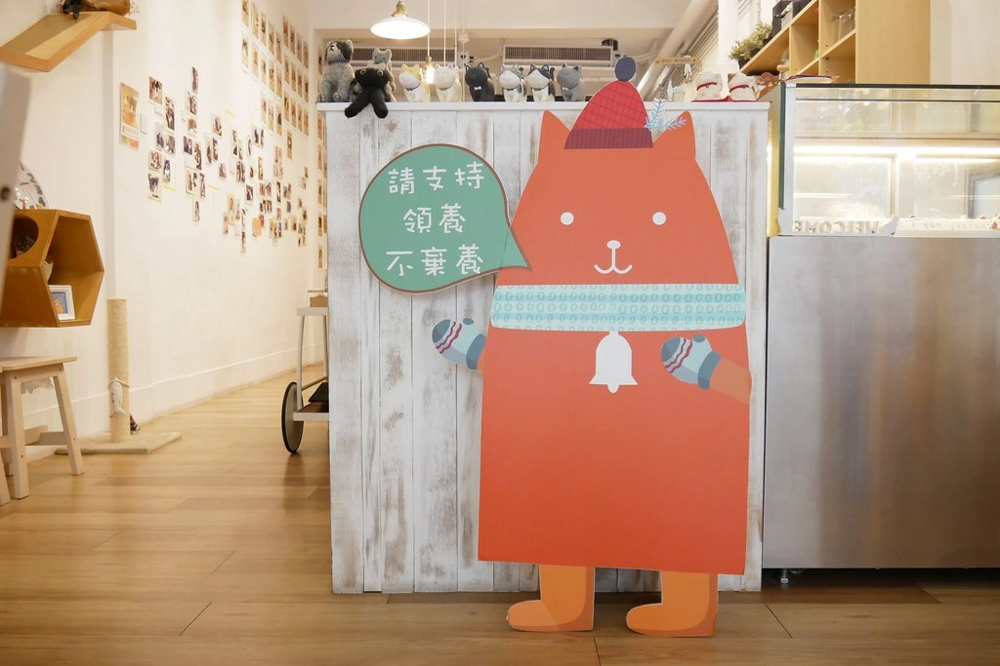
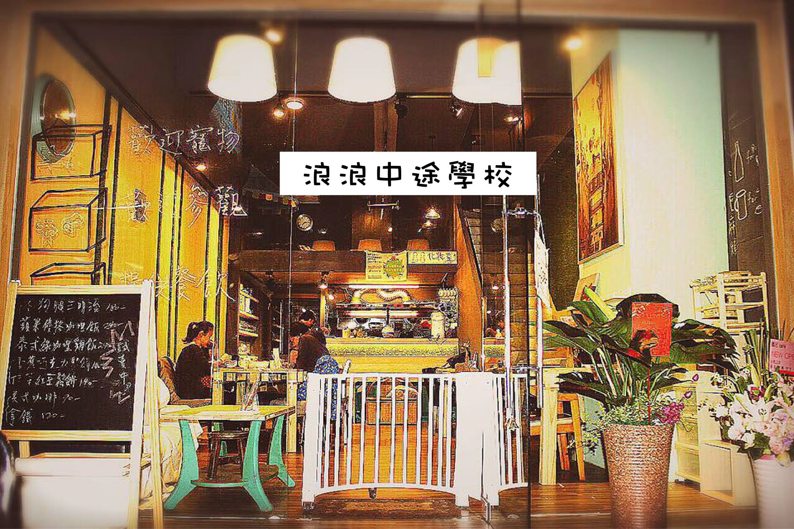

|  | |
社會現況其實我們的社會，養寵物與不養寵物的人們是對立的，大多原因是許多飼主不在乎他人的感受，輕微的從不喜歡狗的家庭會教育子女狗是多麼可怕和髒亂的動物， 寵物友善並不是單純指「寵物可以進入」，而是該環境對寵物是無害的，希望透過正確的方式和規劃，讓環境本身對寵物是友善的， | |
毛孩相關禮儀毛孩帶出去，也必須要有該有的禮儀，要有同理心，避免給環境或者商家製造髒亂和噪音，相對的毛孩乖巧，當父母的也會很有面子，因為孩子容易受周遭的人誇獎。下列幾點是最重要的： 1.隨身攜帶便袋和衛生紙，馬上在排便時進行清潔。 2.平時訓練不可隨意吠叫。 3.遵守餐桌禮儀，必要的時候可以隨身攜帶專用碗，讓他吃他的食物。 4.外出住宿，請遵守讓寵物不要上床，並訓練及攜帶他習慣的墊子上休息和睡覺。 5.非密閉或寵物遊玩空間，請隨時牽繩，避免亂跑。 6.外宿不讓寵物上床，攜帶寵物自己的睡墊。 |
|
|  |
咖萃 cafe’ con leche咖萃咖啡廚房咖萃cafe’ con leche咖萃咖啡廚房是一間複合式餐廳，不僅提供多國料理，同時也是一家寵物友善餐廳，一進入店內，就可以看見櫃台陳列與木酢達人合作所販賣的寵物用品，並且店家也有供應狗狗鮮食。 |
|
Homecafe 幸福。好食 寵物認養主題餐廳Homecafe是一間以"寵物認養"作為宗旨的複合式餐廳,不同於一般"寵物餐廳", Homecafe是流浪貓狗的"暫時之家",目標幫他們找到充滿愛與關懷的永久之家。所謂"Homecafe",是邀請客人來店內作客,聊天和吃飯的同時,給這些毛孩子親人的機會, 並讓有緣人帶他們回家。期盼店內的這一個小空間,能幫流浪貓狗有暫時的安身之處,進一步與來吃飯的客人牽線,帶給彼此快樂與愛! |
 |
|
 |
踏踏地球 Ta Ta Earth「我們有著最執著的夢想及最簡單的愛想給毛小孩一個友善的空間。」踏踏地球結合寵物鮮食餐點與寵物住宿美容的服務，一樓為用餐區，二樓便是寵物美容區以及住宿區。不僅讓有攜帶毛小孩的客人能帶著毛小孩一同用餐，如有讓毛小孩做美容，主人也能安心地待在店內消磨時間。 |
|
G貓甜點・Glock Bakery 貓咪中途甜點店醫學背景外行老闆娘誤打誤撞踏入甜點領域，從網路甜點店到寵物咖啡廳，這一間咖啡廳不僅會吸引喜歡貓咪的人，對甜點為之瘋狂的人也會將它放入自己的口袋名單。短短幾年之中已經送養近250隻貓咪了，考慮到客人的感受將室內的區域劃分兩層，一層與其他咖啡廳沒有太多區別，但大多的擺設與貓咪相關，會害怕貓咪的客人也可以來。而二樓是貓咪的活動區域，這邊可以跟許多親人的貓咪做接觸，顧慮到衛生以及客人的感受。 |
 |
|
 |
攜旺cafe台中寵物餐廳&浪浪中途學校攜旺cafe不僅是一間寵物友善餐廳，更是一間浪浪的中途學校！店內不僅有各式美味的料理，而且更有超可愛的狗狗親自為你送上菜單，而且這些狗狗可都是浪浪出身！老闆曾是導盲犬訓練師，有鑑於領養風氣逐漸上升，但國人教養觀念並未提升，故投身於流浪犬的教育工作，幫助他們更能融入人類家庭生活，避免二度棄養、不適收養的情形發生。並且已教育的浪浪也可讓客人領養。店內也定期舉辦狗狗行為講座，學習完成後與合適條件的收養家庭進行專業媒合輔導，避免二度棄養、不適收養的情形發生~並以自給自足的方式維持教養浪犬的開銷。 |
| 靜宜大學 大眾傳播學系 楊蕙嬪 賴紜涓 柯思廷 製作 2022 | |